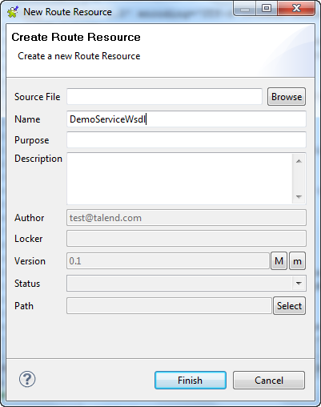
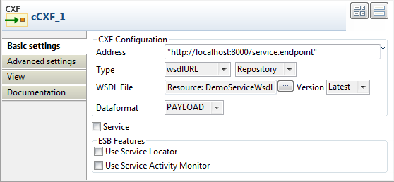
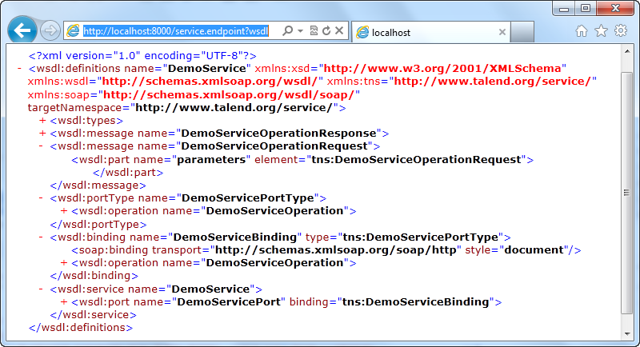

|
Component Family |
Messaging | |
|
Function |
cCXF provides integration with Apache CXF for connecting to JAX-WS services. | |
|
Purpose |
cCXF is used to provide or consume Web services. | |
|
Basic settings |
CXF Configuration/Address |
The service endpoint URL where the Web service is provided. In case cCXF is used to consume a Web service and the endpoint lookup shall use the Service Locator (the Use Service Locator check box is selected), the URL needs to be |
|
|
CXF Configuration/Type |
Select which type you want to use to provide Web service. Either wsdlURL or serviceClass. wsdlURL: Select this type to provide the Web service from a WSDL file. Choose Repository or File to provide the Web service from a Route Resource or the file system. serviceClass: Select this type to provide the Web service from an SEI (Service Endpoint Interface) Java class. |
|
|
CXF Configuration/WSDL File |
This field appears when the wsdlURL service type is selected. If the WSDL file is from the file system, browse to or enter the path to the WSDL file. If the WSDL file is from a Route Resource, click [...] and select the one you want from the Resources tree view. The Version list appears allowing you to choose from all the versions of the Route Resource. |
|
|
CXF Configuration/Service Class |
This field appears when the serviceClass service type is selected. Enter the name of the service class to be used to provide the Web service. |
|
|
CXF Configuration/Dataformat |
The exchange data style. MESSAGE, PAYLOAD, or POJO. MESSAGE is the raw message that is received from the transport layer. PAYLOAD is the message payload,
the contents of the POJOs (Plain Old Java Objects) are the Java parameters to the method being invoked on the target server. |
| Service | Select this check box to specify the service port. This option is useful especially when there are multi service ports in the WSDL or service class. | |
| Service Name | The service name this service is implementing. It maps
to the wsdl:service@name in the format of
ns:SERVICE_NAME where ns is a namespace
prefix valid at this scope. | |
| Port Name | The endpoint name this service is implementing. It maps
to the wsdl:port@name, in the format of
ns:PORT_NAME where ns is a namespace
prefix valid at this scope. | |
| ESB Features/Use Service Locator |
Provides service consumers with a mechanism to discover service endpoints at runtime without specifying the physical location of the endpoint. Additionally, it allows service providers to automatically register and unregister their service endpoints at the Service Locator. NoteFor service consumers, the URL additionally needs to be set to The Custom Properties table appears when the Use Service Locator check box is selected. Click | |
| ESB Features/Use Service Activity Monitor |
Captures events and stores this information to facilitate in-depth analysis of service activity and track-and-trace of messages throughout a business transaction. This can be used to analyze service response times, identify traffic patterns, perform root cause analysis and more. NoteThis feature is not supported when MESSAGE is used as the processing mode. When MESSAGE is selected in the Dataformat field, the Use Service Activity Monitor check box is disabled. | |
| Advanced settings | Arguments | Set the optional arguments in the corresponding table. Click [+] as many times as required to add arguments to the table. Then click the corresponding Value field and enter a value. See the site http://camel.apache.org/cxf.html for available URI options. |
|
Usage |
cCXF can be a start, middle or end component in a Route. | |
|
Limitation |
Multiple cCXF components with the same label in a Route is not supported. | |

In this scenario, a Web service is produced by a cCXF component using a WSDL file.

This use case requires one cCXF component and one cProcessor component.
From the Palette, expand the Messaging folder, and drop a cCXF component onto the design workspace.
Expand the Processor folder, and drop a cProcessor component onto the design workspace.
Right-click the cCXF component, select Row > Route from the contextual menu and click the cProcessor component.
Label the cCXF component for better identification of its functionality.
In this scenario, the cProcessor component is used only to enable the cCXF component to function as a service producer. Therefore, it does not need any configuration.
Double-click the cCXF component to display its Basic settings view in the Component tab.

In the Address field, type in the service endpoint URL for the Web service to be provided, http://192.168.0.212:8000/service.endpoint in this example.
From the Type list, select wsdlURL to enable producing the Web service from a WSDL file.
In the Wsdl File field, browse to or type in the path to the WSDL file to be used.
From the Dataformat list, select PAYLOAD mode for the wsdlURL data format.
Press Ctrl+S to save your route.
Click the Code tab at the bottom of the design workspace to have a look at the generated code.

As shown in the code, the cCXF component labelled
WebService_producerproduces the Web service from an input fileairport_soap_route.wsdlusing the endpoint URLhttp://192.168.0.212:8000/service.endpoint.Click the Run view to display it and click the Run button to launch the execution of your Route. You can also press F6 to execute it.
RESULT: The service is successfully started. You can access it from a Web browser using the service endpoint URL followed by
?wsdl.
In this scenario, a Web service is provided from a Java class file using a cCXF component.
From the repository tree view, expand the Code node and right click the Beans node. In the contextual menu, select Create Bean.

The New Bean wizard opens. In the Name field, type in a name for the bean, for example, CXFdemobean. Click Finish to close the wizard.

Change the class type to
interface, change the return type tostringand remove the message body.package beans; public interface CXFdemobean { public String helloExample(String message) ; }Press Ctrl+S to save your bean.
This use case requires one cCXF component and one cProcessor component.
From the Palette, expand the Messaging folder, select the cCXF component and drop it onto the design workspace.
Expand the Processor folder, select the cProcessor component and drop it onto the design workspace.
Right-click the cCXF component, select Row > Route in the contextual menu and click the cProcessor component.
Label the components for better identification of their functionality.
In this scenario, the cProcessor component is used only to enable the cCXF component to function as a service producer. Therefore, it does not need any configuration.
Double-click the cCXF component to display its Basic settings view in the Component tab.

In the Address field, type in the service endpoint URL for the Web service to be provided, http://192.168.0.212:8001/service.endpoint in this example.
From the Type from, select serviceClass to start the Web service from a Java class.
In the Service Class field, specify the predefined bean class, CXFdemobean in this example.
From the Dataformat list, select POJO as the serviceClass service data format.
Press Ctrl+S to save your Route.
Click the Code tab at the bottom of the design workspace to have a look at the generated code.

As shown in the code, the cCXF component labelled
WebService_producerproduces the Web service from an predefined beanbeans.CXFdemobeanusing the endpoint URLhttp://192.168.0.212:8001/service.endpoint.Click the Run view to display it and click the Run button to launch the execution of your Route. You can also press F6 to execute it.
RESULT: The service is successfully started. You can access it from a Web browser using the service endpoint URL followed by
?wsdl.
In this scenario, a Web service is provided from a Route Resource using a cCXF component.
From the Repository tree view, right-click the Resources node and select Create Resource from the context menu.

The New Route Resource wizard opens. In the Name field, type in a name for the Resource, for example, DemoServiceWsdl. Click Finish to close the wizard.
Browse to an existing WSDL file from the local file system and click Finish.
Press Ctrl+S to save your Route Resource.
This use case requires a cCXF and a cProcessor component.
From the Palette, expand the Messaging folder, and drop a cCXF component onto the design workspace.
Expand the Processor folder, and drop a cProcessor component onto the design workspace.
Right-click the cCXF component, select Row > Route from the contextual menu and click the cProcessor component.
Label the cCXF component for better identification of its functionality.
In this scenario, the cProcessor component is used only to enable the cCXF component to function as a service producer. Therefore, it does not need any configuration.
Double-click the cCXF component to display its Basic settings view in the Component tab.
 In the Address field, type in the service endpoint URL for the Web service to be provided, http://localhost:8000/service.endpoint in this example.
From the Type list, select wsdlURl and use the Repository property type to start the Web service from the Route Resource that we have created.
In the WSDL File field, click the [...] button and select DemoServiceWsdl from the Resources tree view. Click OK to close the wizard.
Press Ctrl+S to save your Route.
Click the Code tab at the bottom of the design workspace to have a look at the generated code.

As shown in the code, the cCXF component labelled
WebService_producerproduces the Web service from an predefined Route ResourceDemoServiceWsdlusing the endpoint URLhttp://localhost:8000/service.endpoint.Click the Run view to display it and click the Run button to launch the execution of your Route. You can also press F6 to execute it.
RESULT: The service is successfully started. You can access it from a Web browser using the service endpoint URL followed by
?wsdl.